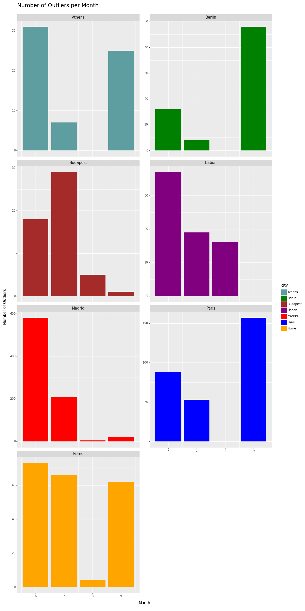
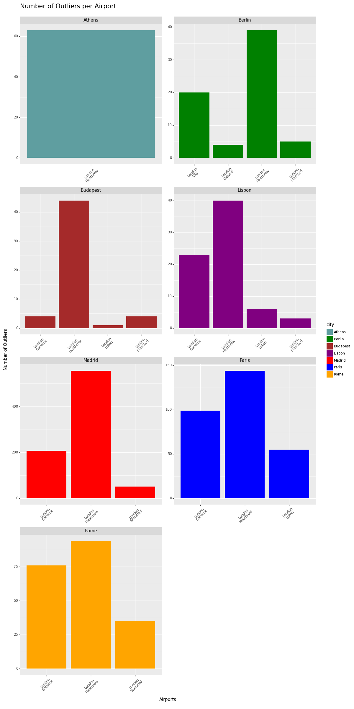

Data
Data Collection Challenges
- Volatility of Flight Ticket Prices: The prices of flight tickets are influenced by numerous factors, requiring a careful approach to analysis.
- Lack of Historical Data: We lacked access to historical data, which would have allowed us to identify patterns.
- Data Complexity: The vast amount of data, with 412 variables, required a complex process to identify the 30 most relevant variables for our project.
- Data Volume: The sheer volume of data collected for booking time window analysis was immense, as we collected data weekly for seven weeks for flights from London to seven cities.
Data Overview
The data includes various details such as departure and arrival times, airports, airlines, booking agents, flight duration, ticket prices, etc..
Data distribution
All cities show a right-skewed distribution, where the mean is higher than the median, indicating that there are some higher-priced tickets pulling the mean up. This could be due to factors like premium flights or higher prices during peak travel times.
| Athens | Berlin |
|---|---|
| Budapest | Lisbon |
|---|---|
| Madrid | Paris |
|---|---|
 |
| Rome | |
|---|---|
Cities like Paris, Madrid, and Berlin have a relatively narrow price distribution. This suggests that the price difference in these cities is smaller, and most prices are concentrated in the middle range. Cities like Athens, Lisbon, and Budapest have a relatively wide price distribution. This suggests that these cities have a larger price difference, and there may be some high-end listings. Some interesting points：
Data Points: Madrid has the highest number of data points, which could suggest that Madrid was a more popular destination during the data collection period. On the other hand, Budapest has the fewest data points, which could suggest fewer flight options or less popularity.
Price Variability: The standard deviation, which measures the variability of prices, is highest for Athens and lowest for Berlin. This could mean that prices for flights to Athens are more unpredictable, while prices for flights to Berlin are more stable
Price Range: Athens has the highest mean and median prices, suggesting it’s generally more expensive to fly to Athens. On the other hand, Berlin has the lowest mean and median prices, indicating it’s generally cheaper to fly to Berlin.
Since all cities show a right-skewed distribution, it becomes crucial to analyse the outliers. We aim to determine if the outliers share the same properties across these cities.
Outlier Analysis
Our analysis identified outliers in flight ticket prices for each city using the Interquartile Range (IQR) method. The number of outliers varied across cities, with Madrid having the most (814) and Budapest the least (53).
| City | Paris | Berlin | Madrid | Lisbon | Rome | Budapest | Athens |
|---|---|---|---|---|---|---|---|
| Outliers | 298 | 68 | 814 | 72 | 205 | 53 | 63 |
Number of Outliers per Month

In terms of monthly distribution, outliers were most common in June for most cities, except Paris and Berlin, which had the most outliers in September. August had the fewest outliers across all cities.
Number of Outliers per Carrier
When examining outliers by carrier, British Airways had a significant number of outliers across all cities. For Paris, the majority of outliers were associated with easyJet, while for Madrid, outliers were almost evenly distributed between British Airways, Iberia, and Vueling Airlines.
Number of Outliers per Departure Airport

Regarding departure airports, London Heathrow had the most outliers across all cities, suggesting that flights from this airport are more likely to have extreme prices.
These findings suggest that the month of travel, the airline, and the departure airport can significantly influence the likelihood of encountering extreme ticket prices. This information can be valuable for travellers seeking to avoid high costs.